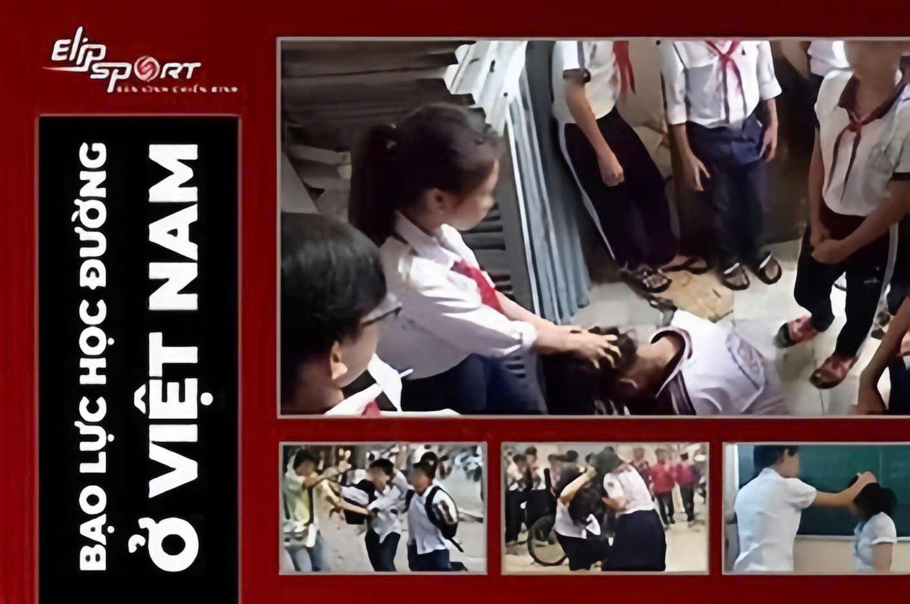
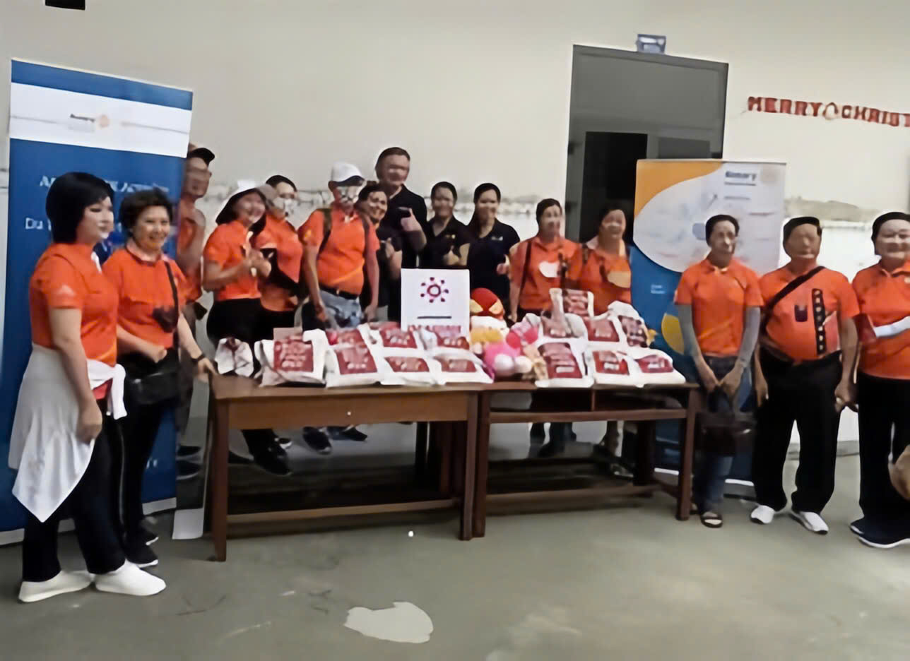
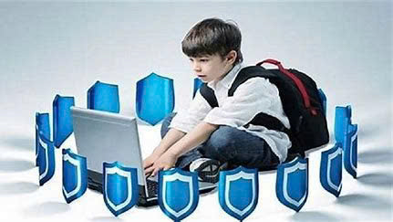
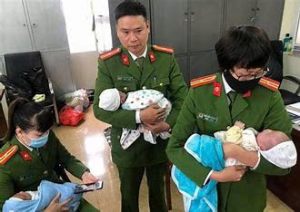
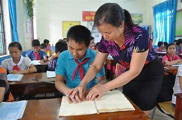

Các dự án
1. Dự án phòng chống bạo lực trẻ em
- Mục tiêu: Ngăn chặn và giảm thiểu các hình thức bạo lực đối với trẻ em như bạo lực gia đình, bạo lực học đường, xâm hại tình dục, và bạo lực trực tuyến.
- Hoạt động: Cung cấp các chương trình giáo dục về quyền trẻ em, xây dựng các đường dây nóng để báo cáo các hành vi bạo lực, hỗ trợ pháp lý và tâm lý cho nạn nhân.

2. Dự án hỗ trợ trẻ em đường phố và lao động trẻ em.
- Mục tiêu: Giúp trẻ em đường phố và trẻ em lao động trái phép có cơ hội tiếp cận với giáo dục, y tế, và các quyền cơ bản khác.
- Hoạt động: Cung cấp chỗ ở tạm thời, giáo dục nghề nghiệp, hỗ trợ pháp lý, và tìm kiếm cơ hội tái hòa nhập xã hội cho trẻ em.

3. Dự án bảo vệ trẻ em trực tuyến.
- Mục tiêu: Bảo vệ trẻ em trước các mối đe dọa trực tuyến như lừa đảo, xâm hại tình dục qua mạng, bắt nạt mạng, và tiếp xúc với nội dung không phù hợp.
- Hoạt động: Tuyên truyền về an toàn mạng, cung cấp các công cụ quản lý và bảo vệ thông tin cá nhân cho trẻ em và
gia đình, đồng thời hợp tác với các nhà cung cấp dịch vụ mạng để giám sát và
gỡ bỏ các nội dung nguy hiểm.

4. Dự án phòng chống buôn bán trẻ em.
- Mục tiêu: Ngăn chặn nạn buôn bán trẻ em và cung cấp sự hỗ trợ cho những nạn nhân của việc này.
- Hoạt động: Phối hợp với các tổ chức quốc tế, chính quyền địa phương để phát hiện và ngăn chặn các hoạt động buôn bán trẻ em, đồng thời hỗ trợ tái hòa nhập xã hội cho nạn nhân.

5. Dự án gáo dục về quyền trẻ em.
- Mục tiêu: Nâng cao nhận thức của cộng đồng, trẻ em và gia đình về quyền trẻ em theo Công ước Quốc tế về Quyền Trẻ Em.
- Hoạt động: Tổ chức các buổi hội thảo, chương trình giáo dục trong trường học và cộng đồng, cung cấp tài liệu truyền thông về quyền trẻ em.
6. Dự án hỗ trợ trẻ em khuyết tật.
- Mục tiêu: Đảm bảo rằng trẻ em khuyết tật có quyền được tiếp cận với giáo dục, chăm sóc y tế, và các dịch vụ xã hội khác.
- HOạt động: Cung cấp trang thiết bị, dịch vụ y tế, giáo dục hòa nhập và hỗ trợ phát triển kỹ năng cho trẻ em khuyết tật.
